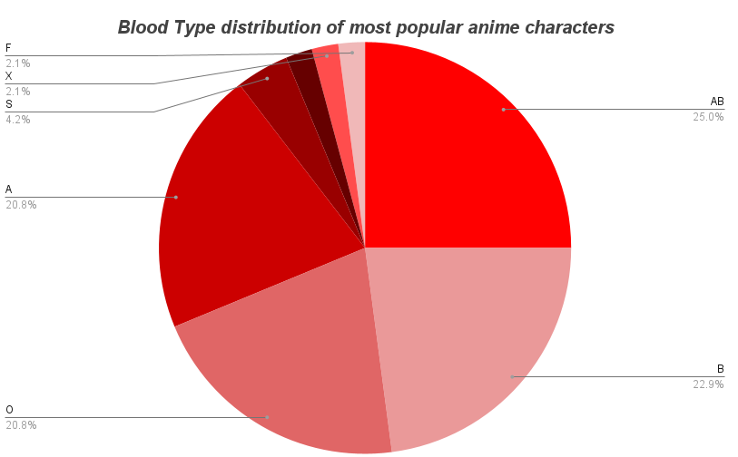

EXCEL PROJECT 1
Many times fantasy tries to resemble real life but unfortunately there are many things that are not considered. One type of fantasy genre I enjoy is anime. Especially some of
the most popular ones with the fighting. But as I see my favorite character, Goku, in the hospital or in a state of recovering one thing comes to mind. What if they need a
blood transfusion? Of course who needs a life saving medical treatment when you have senzu beans.
Using a Pivot table to find the age range of some of the most popular anime characters. Of course the 10 year old is none other than Ash Ketchum.
Blood types include the ones Eiichiro Oda, the creator of One Piece made up for his characters.
Animes used: Attack on Titan | Death Note | One Punch Man | Re:Zero | Tokyo Ghoul | Naruto | Steins;Gate | Berserk | Gintama | Fulmetal Alchemist | Hunter x Hunter | One Piece | Code Geass | My Hero Academia | Dragonball Z | Pokemon